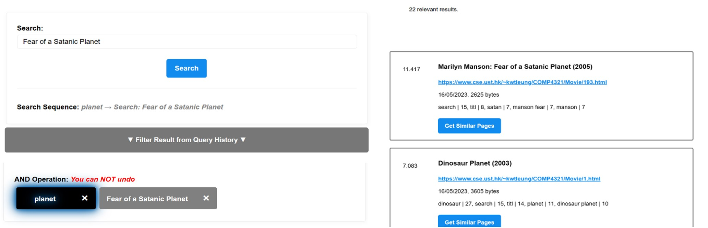
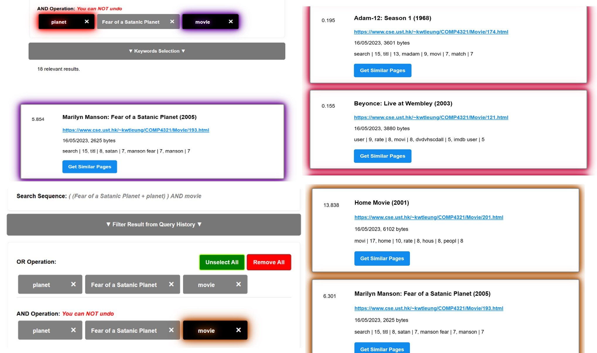
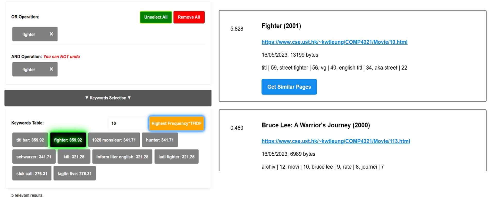

Web Crawler
A Java-based web crawler with indexing and search functionalities (Mar 2024 - May 2024)
Overview
COMP4321-Crawler is a web crawler and search engine project developed for the COMP4321 Information Retrieval course. It focuses on building a functional search engine with a spider for web crawling, an indexer for keyword extraction, and a retrieval function that ranks results based on relevance.
Key Features
- Spider Function: Recursively fetches pages from a given website.
- Indexer: Extracts keywords from pages and inserts them into an inverted file.
- Retrieval Function: Compares query terms against the inverted file and returns top-ranked documents, supporting phrase queries.
- Web Interface: Allows users to input queries, submit them, and view ranked results.
System Design
Backend: Web Crawler and Indexer (Java)
- Crawler: Implements a Breadth-First Search (BFS) algorithm.
- Indexer: Handles text processing (stop word removal, stemming, n-gram extraction).
- Database: Uses JDBM for efficient data retrieval.
Frontend: Search Engine Interface (Apache Tomcat)
- Search Engine: Simple, user-friendly interface.
- Result Ranking: Uses a vector space model with cosine similarity.
Technology Stack
- Programming Language: Java
- Frontend: Apache Tomcat
- Database: JDBM
- Java Version: OpenJDK 21.0.2
Screenshots
Search Result:

Advance Search with OR/AND Operator:

Keyword Table:

Repository
Find the source code and additional information in the
COMP4321-Crawler GitHub repository.
License
This project is open-source and available under the MIT License.
Back to Home